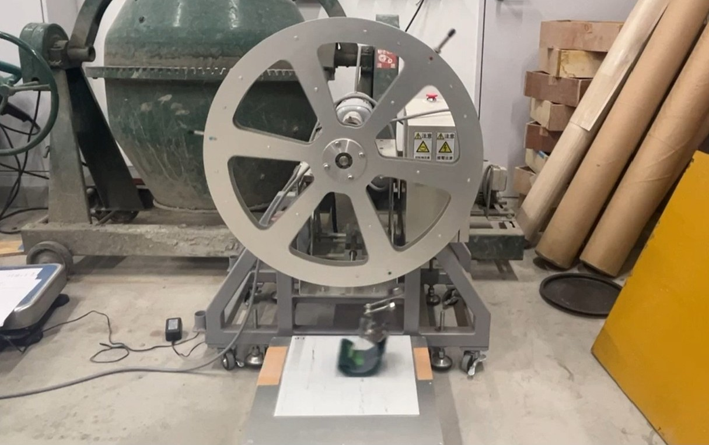
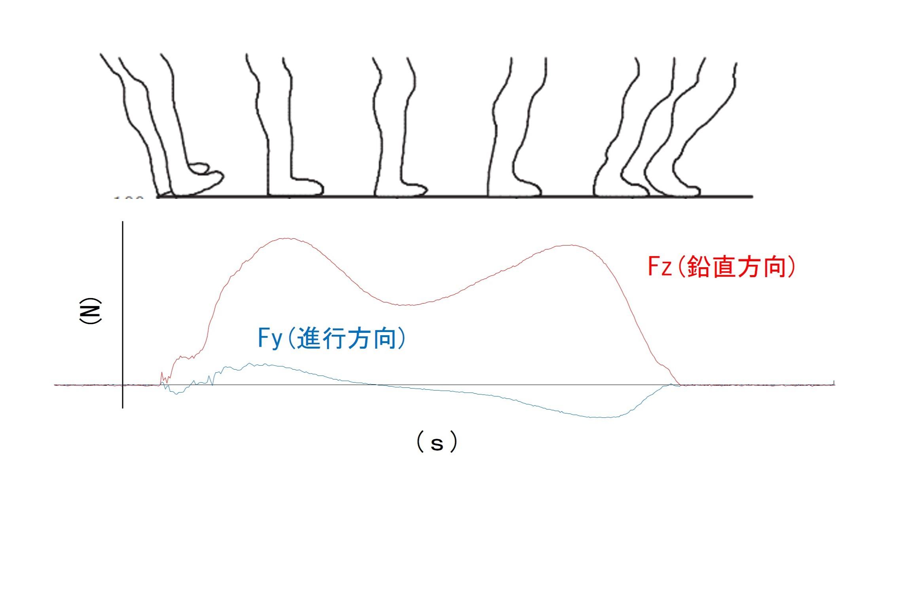

供用に伴う床材の劣化を事前に予測し、事故の発生を未然に防ぐ。
駅舎や小売店といった公共施設の床材には、施設の利用者の安全を確保するために十分な防滑性が必要となります。しかしこうした床材は、施工直後には防滑性能を有していても、その上を施設利用者が繰り返し歩行することで摩耗が進行し、時間がたつにつれて防滑性能が低下してしまうことがしばしばあります。利用者の方々に安全に施設を使ってもらうためには、このような状況を防がなくてはなりません。そのためには、床材の交換時期を適切に管理することが必要です。しかし、床材の摩耗程度は様々な要因によって進行度合いが異なるため、実際に事故が発生してから対処療法的に床材が交換されることが少なくありません。
そこで本研究室では、利用者の通行量や動作に応じた床材への摩耗負荷を体系的に整理する方法を検討しています。さらに、施設における利用者の人数や動作などを人流解析によって把握することを目指しています。最終的には、これらを掛け合わせることで床材の耐用年数を事前に予測できると考えています。
(画像上：人の歩行による摩耗を再現する試験機 画像左下：歩行時の荷重測定の様子 画像右下：人流解析モデル)